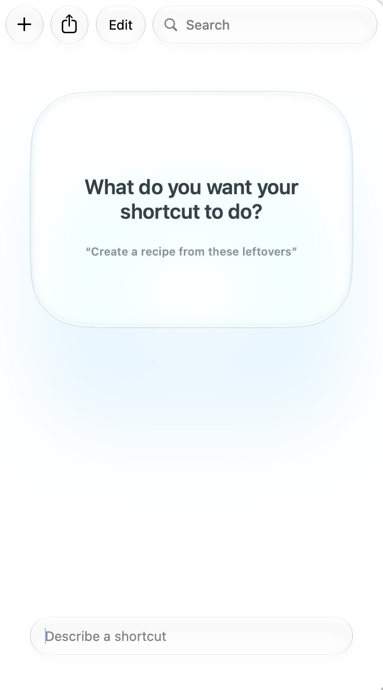
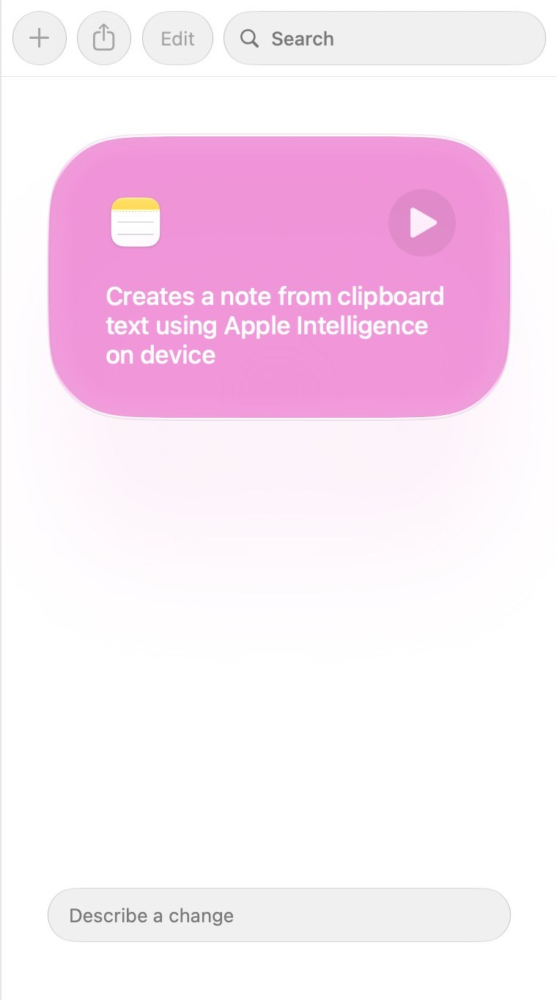

Apple Shortcuts
Shortcuts is the automation app on every iPhone, iPad and Mac. Make a new shortcut, describe what you want it to do in plain words, and Shortcuts builds it for you with Apple Intelligence. Then you check it and tweak it, the way you would anything an AI makes.
The presentation shows a Class Notes shortcut for student notetaking. The worked example below uses a meeting transcript to practise the same describe, check and refine loop.
Best for
A routine you repeat, with an AI step in the middle. Small, personal, and on the device you already teach with.
Start here
The Shortcuts app, on a Mac or iPad with an M1 chip or later, or an iPhone 15 Pro or later, with Apple Intelligence turned on. Describing a shortcut needs macOS 27, iPadOS 27 or iOS 27, and an internet connection. Summarise’s Use Model step runs on the device itself.
Open Shortcuts, press +, and describe a shortcut once. The first time, Shortcuts may need to prepare it. Check every device you will use: Apple Intelligence is on, and the device language and Siri language are set to the same supported language.
This guide is a draft. Screenshots marked “to come” are still to be taken, and anything tagged TBC still needs checking.
Exercise 1: Describe your shortcut
The worked example is Summarise. It turns a meeting transcript into tidy notes. You describe it, and Shortcuts assembles the actions.

- In Shortcuts, press + to make a new shortcut. It asks: What do you want your shortcut to do?
- In Describe a shortcut, at the bottom, type what you want, as in the description below. Then press Return.
- Wait while Shortcuts assembles the actions. If your description could mean more than one thing, it asks you a question first.
Make a shortcut that takes the text on my clipboard, uses the on-device Apple Intelligence model to turn a meeting transcript into notes with a title, the date, Key Points, Discussion and Actions, and saves the notes as a new note in my Transcribed folder in Notes.
Not yet tested. TBC
A good description says three things
- What goes in. The text you copied, a photo, a file, or something the shortcut asks you for.
- What Apple Intelligence does with it. Summarise it, rewrite it for Grade 5, or turn it into questions.
- Where the result goes. A note, a message, a file, or the screen.
There is a daily limit on describing shortcuts. If you reach it, build the shortcut by hand: search the list of actions for each one in Figure 2, and add them in order. Describe a shortcut also doesn’t work in every language. If it says it doesn’t support your language, describe the shortcut in English.
Exercise 2: Check it, and tweak it
What Shortcuts builds is a first draft. Compare it with Summarise as the presenter finished it, in Figure 2, and make it yours. The blue words in each action are the parts you can change: click or tap one.
![The finished Summarise shortcut in the Shortcuts app on a Mac, as five actions in a column. Get clipboard. Wait 1 second. Use On-Device model, with a long prompt: format notes from a meeting, here is the transcript, then the Clipboard variable, then a title and the date, a Key Points section of three to six bullets, a Discussion section of two or three short paragraphs, and an Actions section listing who agreed to do what and by when, with None recorded if nothing was agreed, all based on the transcript. Set variable Summary to Response. Create note with Summary in the Transcribed folder.](images/shortcuts/summarise.jpg)
- Click or tap the name at the top, and call it Summarise.
- In Use Model, choose On-Device, so the transcript stays on your device.
- Replace the prompt in Use Model with the one below. It says exactly what the notes should contain.
- Check that the Clipboard variable is in the prompt, so the model gets the transcript itself.
- In Create Note, choose the Notes folder to save in. Here it is Transcribed.
You are helping format notes from a meeting I attended.
Here is the transcript:
Clipboard
Write the notes as follows.
Start with a short title of about six words describing the meeting, then the date.
Then a section called Key Points, with three to six bullets covering decisions and conclusions reached.
Then a section called Discussion, two or three short paragraphs on what was debated and what was left open.
Then a section called Actions, listing who agreed to do what and by when. Write “None recorded” if nothing was agreed.
Base everything on the transcript. Where the transcript is unclear, leave it out.
After you paste it, delete the word Clipboard and insert the Clipboard variable in its place.
If an action is missing, search for it in the list of actions and add it. If one isn’t needed, delete it.
Exercise 3: Run it on a transcript
Use the practice transcript below, or the transcript of a real meeting. The practice one has made-up names.
Priya: Okay, let’s start. Two things today: the maths checklist tool, and the Grade 7 assessment dates.
Marcus: On the tool, I tried a rough version with 7B on Tuesday. The students who usually lose their place in a multi-step problem used it, and most of them finished the whole problem.
Aiko: That matches what I saw. The step-by-step view helped them. A few asked if it could read each step aloud.
Priya: So are we agreed to pilot it in 7B for two weeks?
Marcus: Yes. And we only use it in the first ten minutes of a lesson, so it doesn’t replace the thinking.
Aiko: Agreed. I’ll add the read-aloud button, and send everyone the new link by next Friday.
Priya: Good. Marcus, can you collect feedback from the 7B students at the end of week one?
Marcus: Yes, a short form. I’ll share the results at our next meeting.
Aiko: One open question: should students use it on their own iPads, or only on the projector? I don’t think we settled that.
Priya: Let’s leave it for now, and decide after the feedback.
Marcus: Someone mentioned the Grade 8 team might want to try it as well, but I’m not sure who.
Priya: We’ll see. On assessment dates, the unit test is moving to the week after the break, so I’ll email parents about that on Monday.
Aiko: Thanks. That’s everything from me.
Priya: Great, thanks everyone.
![A note in the Notes app, made by Summarise from the practice transcript. A title, Meeting Notes: Maths Checklist Tool and Grade 7 Dates, and the date. Then Key Points, five bullets; Discussion, two short paragraphs; and Actions, four bullets: Aiko will add the read-aloud button and send the new link by next Friday, Marcus will collect feedback from 7B students at the end of week one, Priya will email parents about the unit test on Monday, and a last line, None recorded for the iPad or projector decision.](images/shortcuts/summarise-note.jpg)
- Copy the transcript.
- Run Summarise: press the play button.
- Open Notes. Your notes are in the Transcribed folder.
Make the Transcribed folder in Notes before you run the shortcut, or choose a folder you already have.
Read the notes against the practice transcript, as you would check anything an AI makes. When we ran it on 3 October 2026:
- Actions: all three were right. Aiko, Marcus and Priya each agreed to something, and the notes give the time.
- Left open: the iPads or projector question is in the notes as undecided. But the notes also say “a debate arose”, and nobody debated it.
- Unclear: nobody knew who in the Grade 8 team was interested. The prompt says to leave out what is unclear, but the notes kept it, and added that “uncertainty remained about who would lead the effort”.
- Invented: the notes say the pilot starts “Tuesday”. Nobody said that: Marcus had tried a rough version on Tuesday.
Your notes will not be the same. Give it less to work with, and it still fills every section: when we gave it a single sentence, it wrote a Discussion about a debate that never happened.
On-Device means the model runs on your own device, with no internet connection needed, so the transcript stays on it. Still, check the notes against what was said before you share them.
Exercise 4: Describe a change
You can tweak a shortcut with words, too. Describe one change, and Shortcuts makes it. It is the session’s Push it step: substitute, combine or eliminate one thing. Then check what changed, as in Exercise 2.

- Select Summarise in your library. Shortcuts shows a card that says what it does. In the box at the bottom, Describe a change, type one change, such as one of these. TBC
- Press Edit to check the actions it changed, then run it again on your transcript.
Ask me which Notes folder to save the notes in, instead of always using Transcribed.
After saving the note, also email the notes to me.
Leave out the Discussion section of the notes.
Push it further
Change one thing at a time, and run the shortcut after each change.
Turn this reading into three questions for Grade 7 students, with the answers underneath.
Put this in Use Model instead of the meeting prompt, with the Clipboard variable after it. Copy a reading, and run it.
- Turn on Follow Up in Use Model. You see the model’s answer, and can ask for changes, before it goes to the next action.
- For a long transcript, or a harder job, choose Cloud (large models on Apple’s Private Cloud Compute servers) or Cloud Pro (for longer, more complex tasks) instead of On-Device. There is a daily limit on them, and Cloud Pro needs iCloud+.
- On a Mac, use Pin in Menu Bar or Add Keyboard Shortcut, in Shortcut Details. On an iPad or iPhone, use Add to Home Screen.
Videos
Each video loads only when you press play. They are from independent creators, not from Apple.
Three minutes on Describe a Shortcut, on an iPhone and on a Mac: you explain what you want in plain language, and Apple Intelligence builds the workflow.
On a Mac, feeds information into an AI model in Shortcuts, then does something with its answer. It was made for macOS 26, so some of its model names are older than the ones on this page.
Ten shortcuts made by describing them on an iPhone. Some run by themselves, and some start with one tap from the Home Screen or Control Center. It needs Apple Intelligence.
A tour of what changed in Shortcuts in iOS 27: shortcuts built by AI from a description, new notification and screenshot automations, and storage that syncs through iCloud.